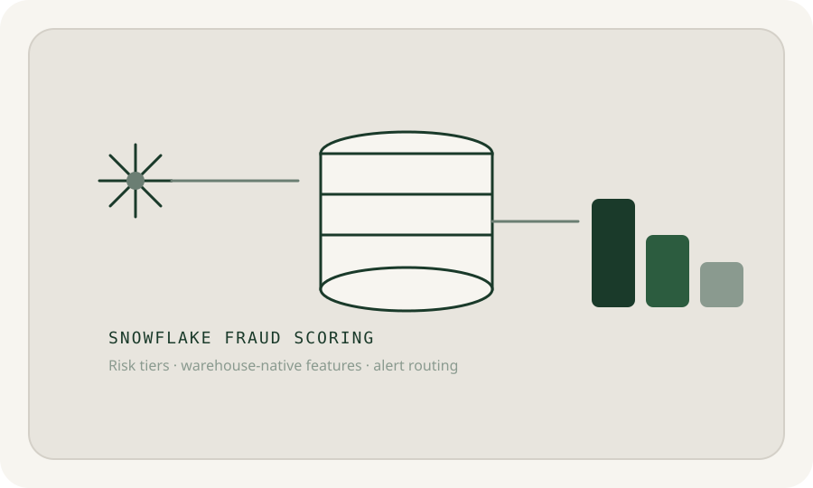

01
FRAUD DETECTION · SNOWFLAKE + SQL
Turning 6.3 million transactions into a review queue
A transparent way to help investigators focus on the transactions most worth reviewing.
The problem
Fraud represented only 0.13% of the synthetic PaySim data, so reviewing every unusual transaction would waste time.
What I did
I organized the data into a three-layer SQL pipeline and created understandable risk indicators based on account balances and transaction type.
The takeaway
The HIGH tier narrowed 6.3 million records to 5,145; 3,912 were labeled fraud, or 76% of the tier.
